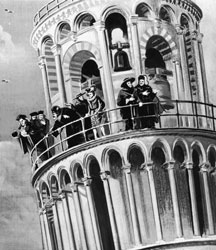
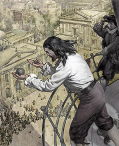
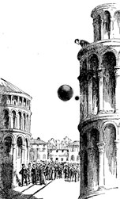
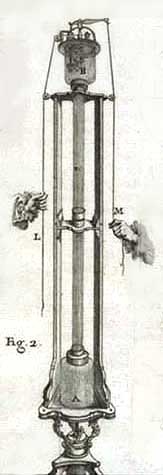
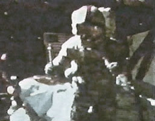
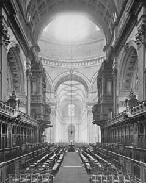

back
to: gravity physics radical
art
to drop [to release an object in a gravitational field]:
scientific demonstrations and experiments
To release a material body in a gravitational field is to initiate a readymade drama in three acts. A rich field of metaphorical connotations is evoked by the incomprehensible transition from rest to motion, the seemingly unbridled acceleration, and the sudden ending in an often violent collision. To drop an object, just to see it fall, is an ever popular type of performance with a long tradition.
Borro, Moletti, Stevin
Some of the first deliberate scientific experiments, carried out around 1600, were concerned with the motion of falling objects. The proportional relation between the weight and the speed of a falling object, as taught by Aristotle, had been found to disagree with experience and was even exposed as inherently absurd. The intuitive basis of Aristotle's theory had also lost its self-evidence. It was not obvious anymore that every body has its "natural place" between the earth and the heavens, and is moved by a "final cause" towards that place. The honest scientist was forced to look at falling bodies in a completely unprejudiced, "aesthetic" mode.This is the context of the numerous performances that were carried out with falling objects around 1600. Typically, two balls of distinct weights or distinct sizes would be released simultaneously from a high tower, to ascertain which ball would reach the ground first.
Simon Stevin & Jan Cornets de Groot:
Two balls with different weights,
dropped from a height of 30 feet.
(De Nieuwe Kerk, Delft)[The location as shown in Dirck van Bleyswyck:
Beschryvinge der Stadt Delft, 1667.]
The first experiments in this sequence were reported in 1575 by Girolamo Borro, who taught Philosophy in Pisa when Galileo was a student there. On repeated occasions, Borro threw two balls at the same time from the highest window of his house; the balls had the same weight, but were made from different materials (wood vs. lead). Borro consistently observed that the wooden ball fell faster and hit the ground first. Borro explained these observations by a fairly loose peripatetic line of reasoning: wood contains more air than lead does; since air is one of the heavy elements, wood has a stronger tendency to move towards the center of the earth. [Borrius Arretinus (1576, pp. 214-217); Caffarelli (1992, pp. 13/14); Drabkin (1960, p. 106, n. 2).]Giuseppe Moletti, Professor of Mathematics in Padua, carried out similar experiments, but his 1576 manuscript records different outcomes. Moletti released, from a high tower, a lead ball of 20 pounds together with a lead ball of 1 pound; in another experiment, he released a wooden ball together with a same-sized lead ball. In both cases, the two balls were observed reaching the ground at the same time. (Cf. Laird, 2000.)
Meanwhile, back in the Netherlands, Simon Stevin and Jan Cornets de Groot were carrying heavy balls up the tower of the New Church in Delft. They simultaneously dropped two balls, one 10 times as heavy as the other, from a height of 30 feet onto a wooden platform. In one experiment, the balls were made of the same material (lead); in another, they were the same size. In both experiments, the two balls hit the platform at precisely the same moment. Stevin (1586, p. 66) reports:
D'ervaring teghen Aristoteles is dese: Laet nemen (soo den hoochgheleerden H. Ian Cornets de Groot vlietichste ondersoucker der Naturens verborghentheden, ende ick ghedaen hebben) twee loyen clooten d'een thienmael grooter en swaerder als d'ander, die laet t'samen vallen van 30 voeten hooch, op een bart oft yet daer sy merckelick gheluyt tegen gheven, ende sal blijcken, dat de lichste gheen thienmael langher op wech en blijft dan de swaerste, maer datse t'samen so ghelijck opt bart vallen, dat haer beyde gheluyden een selve clop schijnt te wesen. S'ghelijcx bevint hem daetlick oock also, met twee evegroote lichamen in thienvoudighe reden der swaerheyt, daerom Aristoteles voornomde everedenheyt is onrecht.
Pisa: Galileo, Coresio, Renieri
  Galileo Galilei: Two balls with different weights, dropped from the Campanile del Duomo di Pisa. Ca. 1590.
[The rightmost image is from F.J. Rowbotham: Story-lives of the Great Scientists. New York, 1918.]
Galileo Galilei's early work on motion is described in his manuscript De Motu, written in Pisa around 1590. A marginal note in this manuscript mentions Borro's (1575) book on the same topic. (Cf. Drabkin, 1960, p. 106, n. 2.) Galileo's manuscript mentions his own experiments with falling bodies, and records surprisingly refined observations. A leaden sphere and an equally large wooden sphere are dropped simultaneously.
"... wood moves more swiftly than lead in the beginning of its motion; but a little later the motion of the lead is so accelerated that it leaves the wood behind it. And if they are both let fall from a high tower, the lead moves far out in front. This is something I have often tested." (Drabkin, 1960, p. 107.)
The higher speed of the heavier object points to the role of the densities of the falling materials, which Galileo at that time took to be the cause of all spontaneous vertical motion. The slower start of the heavier object is explained by the larger upward force which inhabits it in a state of rest; it takes a little while for the downward pull to outweigh this. (A modern explanation was given much later, when Thomas Settle (1983) found that a human experimenter tends to release the lighter object more quickly, because it is gripped with less force than the heavier object.)
Galileo's experiments with falling bodies achieved a legendary status in the history of science. They are prominently mentioned in a sketch of Galileo's life by his disciple Vincenzo Viviani:
"Aristotle taught that mobile objects of the same material and different weight, when moved through the same medium, receive velocities proportional to their weights. Galileo claimed, however, that they had to move with the same velocity, and demonstrated this with many experiments, which he performed from the Clock-Tower in Pisa in the presence of many professors and students."
If Viviani was correct in reporting the presence of professors and students, Galileo's droppings were not merely scientific experiments in the modern sense of that word. They were also demo's, serving a communicative purpose: persuading colleagues and teaching students. The mythical experiments, as Viviani viewed them, were certainly remarkable. In teaching, they replaced abstract description by vivid demonstration. In empirical science they created a perfect peer review system, which allows researchers direct access to each other's observations. And research and teaching were integrated; students and professors were invited at the same time; the university became one scientific community. Finally, the choice of a monumental and visible site for the experiments created a cultural presence in the city at large, encouraging knowledge dissemination beyond the boundaries of the academic scene.
Taking Viviani's account as a point of departure, later biographies of Galileo have added ever-increasing amounts of made-up detail, and exaggerated the scale and the impact of the events. More careful historians have of course noted this, and have suggested that Viviani's original Galileo-bio may already contain fictional elements, since it was written 60 years after these purported happenings, in a spirit of uncritical admiration. Also, they pointed out that Galileo had no need for actual experimentation to dismiss Aristotle's motion laws: already in De Motu he was happy to show their intrinsic absurdity by reasoning about simple "thought experiments". Many maintain therefore that the Pisa droppings never took place. (Cf. Wohlwill, 1905; Cooper, 1935; Segre, 1989; Martinez, 2011.) De degree of detail in Galileo's observations in De Motu, however, suggests that these authors err on the side of skepticism. We concur therefore with Bertoloni Meli (2006, p. 56): "... in all likelihood Galileo repeatedly dropped balls from high places such as the leaning tower of Pisa; lack of additional contemporary records may be attributed to the fact that such public events and disputations were rather common at Pisa and possibly elsewhere."
The leaning tower at Pisa remained a popular site for gravity experiments. Further droppings at this location were reported by Coresio (1612), who claimed that the Aristotelian motion laws were confirmed, and by Renieri (1641). Renieri dropped balls of the same size and different materials (wood and lead), observing that the heavier one arrived first. He also dropped balls of the same material and different sizes, with the larger one first.
Il Coresio dice di aver fatto l'esperienza “di cima al campanile del Duomo di Pisa, sperimentando vero il detto d'Aristotile [...] che ‘l corpo maggiore si muove più velocemente del minore della medesima materia e nel medesimo modo che cresce la gravità, cresce ancora la velocità.” (Caffarelli, 1992, p. 15.)
In una lettera del 13 marzo 1641 Vincenzio Renieri, che dall'anno prima leggeva le matematiche nello Studio di Pisa, fa sapere a Galileo: "habbiamo qui avuto occasione di far um'esperienza di due gravi cadenti da alto di diversa materia, cioè uno di legno et uno di piombo, ma dell'istessa grandezza; perché un tal Gesuita scrive che scendono nello stesso tempo [...]. Ma finalmente habbiamo trovato il fatto in contrario, perché dalla cima del campanile del Duomo tra la palla di piombo e quella di legno vi corrono tre braccia almeno di differenza. Si fecero anche esperienze di due palle di piombo, una della grandezza eguale a un'ordinaria d'artiglieria e l'altra da moschetto, e si vedeva tra la più grossa e la più piccola, dall'altezza dello stesso campanile, esservi un buon palmo di differenza, del quale la più grossa anticipava la più piccola." (Caffarelli, 1992, p. 15.)
Vacuum: Boyle, Scott

Robert Boyle:
A coin and a feather dropped
in a vacuum chamber, 1660.
In 1641 the possibility of a sustained vacuum was demonstrated by Gasparo Berti in Rome. Soon afterwards, Otto von Guericke's vacuum pump (1654) could be employed to evacuate glass jars at will, to create new, artificial environments for physical experimentation. This made it possible, for the first time, to observe the process of "free fall", unhampered by the resistance of atmospheric air. This experiment was carried out in 1660 by Robert Boyle, who observed that in vacuum, a coin and a feather fall with the same speed.
Boyle's experiment was replicated by David R. Scott during a live TV broadcast from the moon on August 2, 1971. He simultaneously released a hammer and a feather at equal distances from the lunar surface; the objects could be observed to hit the ground at the same moment.

David R. Scott:
A hammer and a feather dropped onto the moon.
Live TV broadcast, 1971.
Measurement: Mersenne, Hauksbee

Francis Hauksbee:
Balls dropped from the cupola of
St. Paul's Church, London, 1710
In Paris around 1630, Marin Mersenne also carried out experiments with falling bodies. His letters show that these events functioned at the same time as demo's with "instantaneous peer review".
"Truly I am astounded that you doubt my experience of the equal velocities of an iron ball and a wooden ball; for I only would have to ask the many persons of quality that saw and carried out the experiment with me to solemny swear, and they would bear true witness." [Letter to Jean Rey, 1 April 1632; cf. Caffarelli, 2009, p. 249.]
After Galileo (1632) had published the principle of the uniform acceleration, Mersenne confirmed this hypothesis through quantitative measurements of falling times, using a pendulum to count the seconds. [Mersenne, 1636, p. 87; Cafarelli, 2009, p. 260.] More precise experiments, devised specifically to investigate the influence of air resistance on the velocities acquired by falling bodies, were carried out by Hauksbee (1710):
"The first Experiment I made, was with two Balls: One of them a thin glass Bubble, fill'd with Quicksilver; its Diameter 8 thenths of an Inch, and its Weight 840 Grains. The other Ball was a Cork, whose Diameter was 2 Inches two 10th, and its Weight 120 Grains. When these Balls were dropt, the Pendulum made 8 Vibrations, just as the Quicksilver Ball struck the Ground, and 8 more were repeated before the Cork arrived at the same place. [...]
These Experiments were made from the top of the Cupola of St. Paul's Church, London, from whence to the Floor, on which the Balls were dropt, measured near 220 Feet."Isaac Newton was probably involved with these experiments. Without mentioning Hauksbee, he inserted some of the results in the second edition of his Philosophiae Naturalis Principia Mathematica. [Cf. Caffarelli, 2009, pp. 264-268.]
References
Domenico Bertoloni Meli: Thinking with Objects. The Transformation of Mechanics in the Seventeenth Century. Baltimore: Johns Hopkins University Press, 2006.
Hieronymus Borrius Arretinus: De Motu Gravium et Levium. Firenze, 1575. [Page numbers above refer to the second (1576) edition.]
Roberto Vergara Caffarelli: "Galileo e Pisa." Lezione galileiana. Università di Cagliari, 1992. [Link to PDF]
Roberto Vergara Caffarelli: Galileo Galilei and Motion. A reconstruction of 50 years of experiments and discoveries. Berlin: Springer, 2009.
Lane Cooper: Aristotle, Galileo, and the Tower of Pisa. Ithaca: Cornell University Press, 1935.
Giorgio Coresio: Operetta intorno al Galleggiare de Corpi Solidi. Firenze: Bartolommeo Sermartelli, 1612.
I.E. Drabkin: English translation of Galileo's De Motu. In: Galileo Galiei: On Motion and On Mechanics. Madison: University of Wisconsin Press, 1960, pp. 13-114.
Galileo Galilei: De Motu. Ms., ca. 1590. English translation by I.E. Drabkin in: On Motion and On Mechanics. Madison: University of Wisconsin Press, 1960, pp. 13-114. [The quote is from p. 107.]
Francis Hauksbee: "Experiments concerning the Time required in the Descent of different Bodies, of different Magnitudes and Weights, in Common Air, from a certain Height." Philosophical Transactions, Oct.-Dec. 1710, pp. 196-198.
W.R. Laird: The Unfinished Mechanics of Giuseppe Moletti. An Edition and English Translation of His Dialogue on Mechanics, 1576. Toronto: Toronto University Press, 2000, pp. 146-148.
Marin Mersenne: Letter to Jean Rey, 1 April 1632. In: Correspondance. Vol. III. Paris, 1945, pp. 274-275.
Marin Mersenne: Harmonie Universelle. Paris, 1636.
Alberto A. Martínez: "Galileo and the Leaning Tower of Pisa." In: Science Secrets. Pittsburgh, PA: Pittsburgh University Press, pp. 1-12.
Isaac Newton: Philosophiae Naturalis Principia Mathematica. Second Edition. 1713.
Vincenzo Renieri: Letter to Galileo Galilei, 13 March 1641. [G.G. XVIII, p. 305.]
M. Segre: "Galileo, Viviani, and the tower of Pisa." Studies in History and Philosophy of Science 20 (1989), pp. 435-451.
Thomas B. Settle: "Galileo and early experimentation." In: R. Aris, H.T. Davis & R.H. Stuewer (eds.): Springs of Scientific Creativity. Essays on the Founders of Modern Science. Minneapolis: University of Minnesota Press, 1983, pp. 12-17.
Simon Stevin: De Beghinselen des Waterwichts. Leyden, 1586.
Vincenzo Viviani: Racconto istorico della vita di Galileo. Letter to Leopold de Medici, 1654. [I translate from page 275 of a German version: "Lebens-Beschreibung Galilæi Galilæi." In: Christoph August Heumann (ed.): Acta philosophorum, Vol. 3, 1723/1724, pp. 261-282, 400-423, 467-484.]
Emil Wohlwill: "Galilei-Studien, 1. Die Pisaner Fallversuche." Mitteilungen zur Geschichte der Medizin und der Naturwissenschaften 4 (1905), pp. 229-248.
Remko Scha, 2011